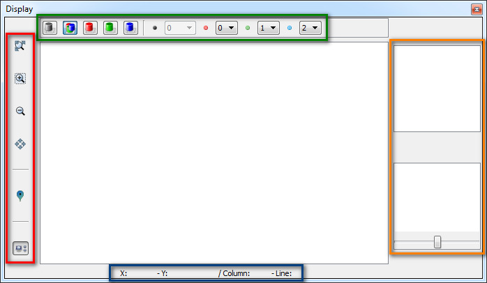
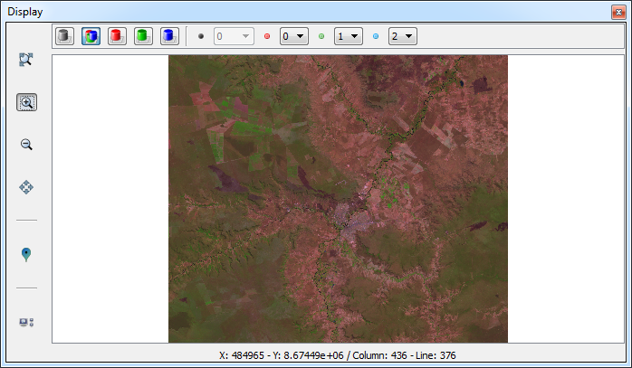
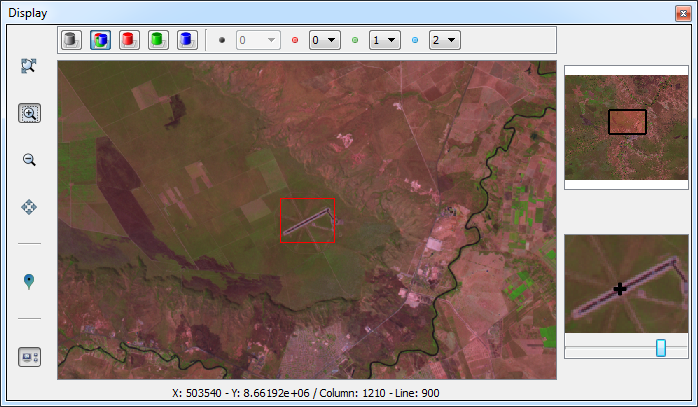

Raster
Navigator
The Raster
Navigator
interface helps the user to view and acquire samples of the
image. This component provides a set of tools that allows the user to
navigate the raster. The
interface consists of the following components:

- Green Box: Allows the
user to change the color composition of the
raster. The set of buttons enables the user to define the color
composition desired. Through the combo boxes is allowed to set
the values of band for each channel.
- Buttons of color composition:
- Combo boxes for band selection:
- Gray Band: index
associated to the gray channel.
- Red Band: index
associated to the red channel.
- Green Band: index
associated to the green channel.
- Blue Band: index
associated to the blue channel.
- Red Box: Tools for
navigation on the raster.
- Enable/Disable extra displays.
- Orange Box: Extra
displays to aid in the visualization of raster.
- Eye Bird: This
display always shows the total area of the raster. A rectangle drawn
on the display indicates the current display area of the main display.
- Zoom In: This display
is the central area of the main display on a larger scale. A slider
allows scaling, helping the user to have a higher accuracy to acquire
samples.
- Blue Box: Information about
the coordinate of the cursor on the raster. Both geographic and matrix
coordinates are displayed.

The
extra displays offer some interaction. The interactions made on these
displays has direct effect on the main display.
- Eye Bird:
- Is possible to drag the rectangle that defines the area of the
current view to the area of interest.
- Zoom In:
- Changing the scale of view
through the slider bar.
- Pan tool is available
in this display.
